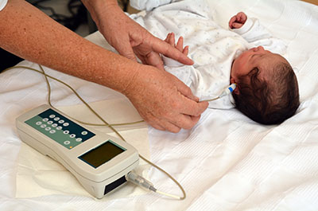
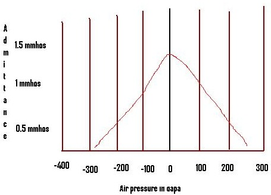
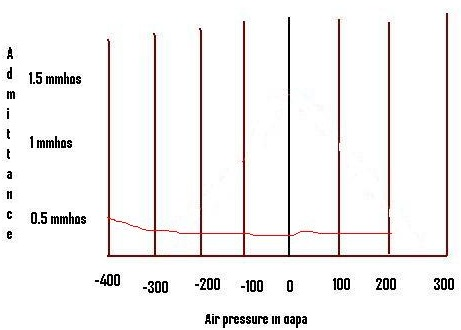
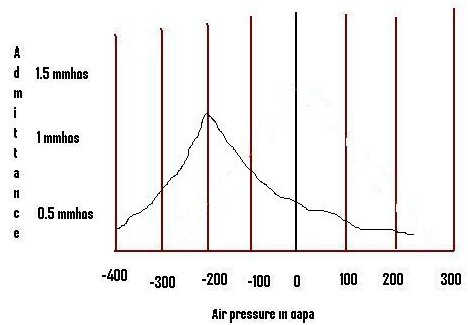
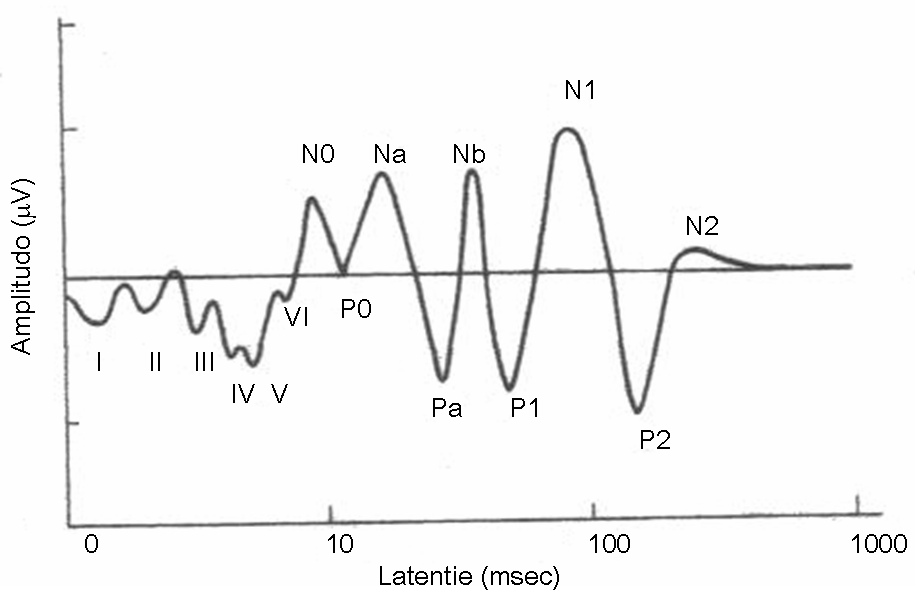
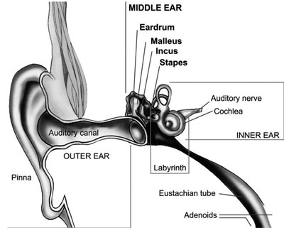
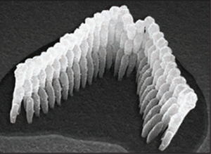
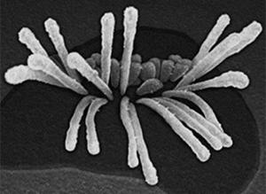
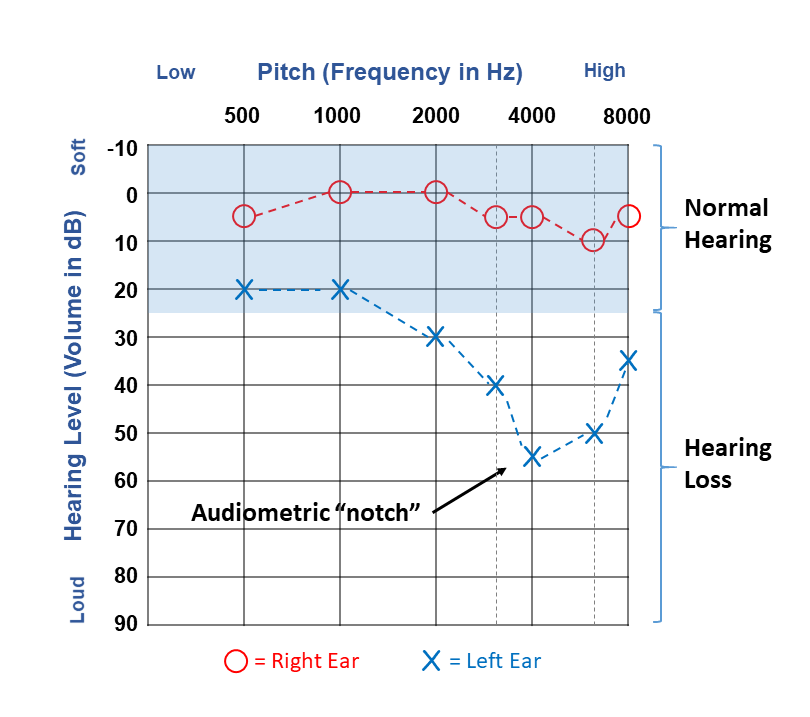

Hearing Screening & Ear/Hearing Disorders
A screening is a quick way to find out who needs more testing, not a diagnosis. This lesson covers what each screening measure samples, and how conditions of the outer ear, middle ear, inner ear, auditory nerve, and central pathway can affect communication.
What you should be able to do afterward
By the end of this lesson you should be able to:
- Distinguish a hearing screening from a diagnostic hearing evaluation, and explain pass, refer, rescreen, and diagnostic follow-up.
- Compare behavioral pure-tone screening, tympanometry, OAE, and AABR/ABR by what each one samples, and describe the newborn 1–3–6 pathway.
- Separate when a hearing difference began from why it occurred: congenital, delayed-onset, progressive, acquired, and genetic.
- Connect outer- and middle-ear conditions with possible conductive effects, and inner-ear and auditory-nerve conditions with possible sensorineural or neural effects.
- Explain why APD cannot be inferred from one symptom or from a passing pure-tone screen, and recognize concerns that warrant prompt or urgent referral.
Why this matters for SLPs
You will meet hearing-screen results in schools, hospitals, early-intervention records, and speech-language referrals. Reading them accurately prevents two opposite mistakes: alarming a family with a diagnosis the screen cannot support, and letting a “did not pass” quietly go without follow-up.
Hearing Screening
Who needs a closer look? Pure-tone screening, tympanometry, OAE, and AABR, and what each result does and does not mean.
1.1 · Screening identifies risk; diagnosis explains the problem
A doorway, not an answer
A hearing screening is a brief check used to identify people who may need more testing. It is designed to reach many people efficiently, and it answers one limited question: did this person meet the screening criteria today, or is follow-up needed?
A diagnostic hearing evaluation asks much broader questions. It uses a test battery to describe hearing sensitivity, the type and degree of hearing loss, the possible site of involvement, speech understanding, and appropriate next steps.
Two different jobs
| Screening | Diagnostic evaluation |
|---|---|
| Brief and standardized | Individualized and more comprehensive |
| Often returns pass or refer / did not pass | Describes and interprets findings |
| Identifies who may need follow-up | Helps confirm or rule out a hearing disorder |
| May be completed by trained screeners under a program protocol | Completed and interpreted by an audiologist |
The wording you use carries the difference. Use: “The child did not pass the hearing screening and needs the recommended follow-up.” Do not use: “The screening showed that the child has hearing loss.”
The easiest way to understand hearing screening is to think of it as a doorway. A screening does not tell us the whole story. It helps decide who can move on and who needs the next step.
If a person passes, it means the responses met the screening rule under those conditions, on that day. It does not mean every part of the auditory system has been tested. It also does not promise that hearing will never change.
If a person receives a refer, or did-not-pass, result, that does not confirm hearing loss. The result might be influenced by middle-ear fluid, ear-canal debris, background noise, movement, instructions, equipment placement, or a true hearing difference. The next step is to follow the program’s pathway. That might be a carefully controlled rescreen, a medical referral, a diagnostic audiologic evaluation, or a combination.
The wording matters. Saying, “The child failed and has hearing loss,” turns a limited screening result into a diagnosis it cannot support. A more accurate statement is, “The child did not pass this hearing screening and needs the recommended follow-up.”
So remember: screening opens a doorway. Follow-up and diagnostic testing tell us what is actually on the other side.
1.2 · Pass, refer, rescreen, and follow-up
What each outcome actually says
A pass means the person met the screening rule for the measures used at that time. It does not guarantee that all hearing is typical, and it does not rule out a later-onset or progressive change.
A refer, did-not-pass, or fail result means the screening rule was not met. Many programs prefer “refer” or “did not pass,” because the result is a next-step signal rather than a diagnosis. Depending on the program and the findings, the next step may be immediate reinstruction and one repeat attempt, a rescreen after a defined interval, medical evaluation, diagnostic audiologic evaluation, or both medical and audiologic follow-up.
The exact pathway depends on age, test method, visible ear findings, risk factors, and local protocol. Repeating a screen many times simply to obtain a pass is unsafe practice: it delays needed evaluation and increases the chance of an erroneous pass.
Two error terms
A false positive occurs when a person is referred but diagnostic testing does not confirm the target condition. A false negative occurs when a person passes even though the target condition is present. False positives create unnecessary follow-up; false negatives delay identification. A well-designed program works to reduce both.
A four-step communication routine
Name the measure (“pure-tone screen,” “OAE,” “AABR,” “tympanometry”). State the outcome (“pass” or “refer / did not pass”). Name the next step in the program protocol. Do not guess the cause.
1.3 · Screening across the lifespan
The method follows the person
Screening methods change with age, development, and the person’s ability to participate.
Who gets screened how
| Population | Common screening approaches | Key concern |
|---|---|---|
| Newborns | OAE and/or AABR | Screening can occur during sleep, without a voluntary response. |
| Preschool and school-age children | Pure-tone screening; tympanometry or OAE may be added | Development, attention, room noise, and middle-ear fluid can all affect results. |
| Adults | Case history or questionnaire, otoscopy or visual inspection, pure-tone screening, other measures as indicated | A pass does not replace referral when the person reports a meaningful change or difficulty. |
| People who cannot reliably complete pure-tone screening | OAE or other age- and development-appropriate methods | Physiologic measures sample specific parts of the system, but they do not measure everyday speech understanding. |

Screening protocols vary across states, school districts, hospitals, clinics, and professional guidelines. Follow the local protocol rather than treating any one example procedure as universal.
1.4 · Behavioral pure-tone screening
The one measure that asks the person to respond
In a behavioral pure-tone screening, the person makes a response, such as raising a hand, pressing a button, or completing a conditioned-play action, when a tone is heard. School-age protocols commonly present a small set of frequencies important for speech, often including 1000, 2000, and 4000 Hz, at a fixed screening level such as 20 dB HL. Exact frequencies, levels, and rescreen rules vary by program.
Strengths
It samples the person’s own behavioral response to sound, it is efficient for children and adults who understand the task, and it can screen several speech-relevant frequencies in each ear.
Limitations
It requires understanding, attention, and a consistent motor response. Room noise, poor earphone placement, or unclear instructions can disrupt it. And a refer result does not show whether the cause is outer, middle, inner, neural, or temporary.
The three physiologic measures that follow, tympanometry, OAE, and AABR, ask for no response at all. That difference is the first thing to know about any screening result: whether the person had to do something, and what happens to the result when they cannot.
1.5 · Tympanometry: middle-ear status inside a screening
A graph about movement, not about hearing
Tympanometry changes air pressure in a sealed ear canal and measures how the eardrum and middle-ear system respond to a probe tone. It earns its place in a screening battery, especially where middle-ear fluid is common, but it is not a direct measure of hearing sensitivity.
Three ideas make a tympanogram readable:
- Pressure: where the tracing reaches its peak, measured in decapascals (daPa). A peak at negative pressure can suggest negative middle-ear pressure.
- Mobility / admittance: how readily the eardrum and middle-ear system move, or admit acoustic energy. Very low mobility produces a shallow or flat tracing.
- Ear-canal volume (ECV): an estimate of the air space between the probe and the eardrum. ECV matters most when the tracing is flat.



A flat Type B tracing has more than one meaning, and ear-canal volume is what separates them. With a typical ECV it may be consistent with middle-ear effusion. With a large ECV, consider a patent PE tube or a tympanic-membrane perforation. With a very small ECV, check probe blockage, cerumen, or canal obstruction.
A tympanogram may look like a hearing graph, but it answers a different question. It shows how the eardrum and middle-ear system respond as ear-canal pressure changes, not the softest sounds a person hears.
Imagine testing a spring by changing the pressure around it. The tympanogram’s peak marks where the middle-ear system has its greatest measured mobility, or admittance.
A Type A tracing has a clear peak near atmospheric pressure. That is consistent with typical middle-ear pressure and movement. A Type C tracing still has a peak, but the peak is shifted into negative pressure. That suggests negative pressure in the middle ear and may occur when the Eustachian tube is not equalizing pressure well.
A Type B tracing is flat, so there is no clear peak. But flat does not have just one meaning. Now you must check ear-canal volume. A flat tracing with an expected volume may be consistent with middle-ear fluid. A flat tracing with a large volume may fit an open PE tube or a perforated eardrum. A very small volume may mean the probe is blocked or the canal is obstructed.
The tracing gives clues. Otoscopy, symptoms, age, probe fit, and other tests turn them into a clinical interpretation. Very young infants also require age-appropriate high-frequency probe tones and norms; adult-style expectations do not simply carry over.
Ted Venema talks tympanometry
Open this video in a regular browser ↗Go deeper (optional) · the acoustic reflex
Audiologists may also measure the acoustic reflex, an involuntary middle-ear muscle response to a sufficiently intense sound. It can add information about the auditory pathway, but reflex-pattern diagnosis and reflex-decay interpretation are beyond this lesson.
Ted Venema talks acoustic reflex
Open in a regular browser ↗1.6 · Otoacoustic emissions: a cochlear outer-hair-cell response
Listening for a sound the ear makes
An otoacoustic emission, or OAE, is a very low-level sound produced mainly by functioning cochlear outer hair cells. A probe in the ear canal presents sound and uses a sensitive microphone to record the response. Nobody has to raise a hand or press a button; the person just needs to be quiet, with a stable probe fit.
A present OAE supports two things at once: functioning outer hair cells in the frequency region measured, and an outer- and middle-ear pathway clear enough for the response to travel back out to the microphone.
An absent OAE is nonspecific. Possible contributors include outer-ear debris or probe blockage, poor probe fit, middle-ear fluid or another conductive problem, too much person or room noise, or cochlear outer-hair-cell dysfunction. And an OAE never measures speech understanding, nor does it rule out every neural or later-onset hearing disorder.
Ted Venema talks otoacoustic emissions
Open this video in a regular browser ↗1.7 · AABR and ABR: a synchronized neural response
Recording the nerve instead of the cochlea
The auditory brainstem response, or ABR, records tiny time-locked voltage changes after sound. Small surface electrodes are placed on the head, sounds are delivered through earphones, and a computer averages many responses so that the auditory signal can be separated from background electrical activity. The person makes no voluntary response, although quiet or sleep helps reduce muscle artifact.
AABR is an automated screening version: the equipment applies a preset algorithm and returns pass or refer. A diagnostic ABR is more flexible, and an audiologist interprets it to answer broader clinical questions.
ABR reflects synchronized activity from the auditory pathway through the auditory nerve and brainstem. It is useful for newborn screening, for people who cannot provide reliable behavioral responses, for estimating auditory sensitivity in some diagnostic evaluations, and for investigating possible neural involvement. Do not treat each ABR wave as coming from one exclusive structure; the response reflects overlapping neural generators.

ABR: testing a newborn baby
Open this video in a regular browser ↗Review: all four screening measures
You have now met every measure in a screening battery. Before comparing OAE and AABR directly, sort the four apart: one is behavioral, three are physiologic, and each one stops at a different point in the auditory system.
1.8 · OAE versus AABR, and why cross-checks matter
Two checkpoints are better than one
Side by side
| Feature | OAE | AABR |
|---|---|---|
| Main response | Cochlear outer-hair-cell activity | Synchronized neural response through the auditory nerve and brainstem |
| Sensor | Probe microphone in the ear canal | Surface electrodes, plus earphones or a probe |
| Voluntary response needed? | No | No |
| Sensitive to outer/middle-ear status? | Yes: the emission must travel back out through those structures | Yes, because the stimulus must reach the cochlea, although the measure samples farther along |
| Can it diagnose hearing loss by itself? | No | No |
| Everyday speech understanding measured? | No | No |
The two tests complement each other because they sample different parts of the auditory system. Present OAEs with an abnormal ABR, for example, can raise concern about disrupted neural transmission or synchrony, as in auditory neuropathy spectrum disorder. That pattern calls for diagnostic evaluation; it is not a diagnosis by itself.
OAE and AABR can both screen hearing without asking a baby to raise a hand or press a button. But they listen at different checkpoints in the auditory system.
An OAE listens for a very faint sound produced mainly by functioning outer hair cells in the cochlea. A probe plays a sound and then records the cochlear response in the ear canal. For that recording to work, the sound must travel inward through the outer and middle ear, and the emission must travel back out. That is why ear-canal debris or middle-ear fluid can make an OAE absent even when the cochlea is not the main problem.
AABR looks farther along the pathway. Earphones present sound, surface electrodes record tiny voltage changes, and the computer checks whether a synchronized neural response is present through the auditory nerve and brainstem.
Neither test measures everyday speech understanding, and neither test provides a full diagnosis by itself. Their value is that they sample different parts of the system.
For example, present OAEs with an absent or very abnormal ABR can raise concern about neural transmission or synchrony. That pattern can occur in auditory neuropathy spectrum disorder, but it still requires a complete diagnostic evaluation.
Think of OAE and AABR as two checkpoints. Comparing them helps show where the pathway deserves a closer look.
1.9 · Newborn screening and the 1–3–6 pathway
Benchmarks that protect early language
Newborn hearing screening supports early access to language and communication. The CDC’s Early Hearing Detection and Intervention benchmarks are commonly summarized as 1–3–6:
These are maximum benchmark ages, not reasons to wait. Earlier follow-up is beneficial when it is available. A newborn can also pass and still develop a later-onset or progressive hearing difference, so surveillance of hearing, communication, and developmental milestones continues, especially when risk factors or family concerns are present.
Source: CDC, EHDI 1–3–6 benchmarks.
1.10 · Screening errors and ongoing surveillance
No program is perfect
Transient ear-canal debris, middle-ear fluid, noise, movement, equipment placement, and the chosen pass rule can all affect results. A well-designed program balances identifying true concerns against unnecessary referrals, and it always provides a clear route to follow-up.
Five questions to ask of any hearing-screen result
What measure was used? Which part of the auditory system did it sample? Was the outcome pass or refer? What does the program require next? And are there current communication concerns or red flags that justify referral even after a pass?
Developmental & Genetic Context
Separating when a hearing difference began from why it occurred. This is context, not a genetics unit.
2.1 · One hearing difference, several labels
Timing, change, and cause are different questions
What each label answers
| Term | Question it answers | Meaning |
|---|---|---|
| Congenital | When was it present? | Present at birth. |
| Delayed-onset | When did it begin? | Begins after birth. This differs from a congenital difference that is simply identified late. |
| Progressive | How does it change? | Becomes greater over time. |
| Acquired | When and how did it develop? | Develops after birth, often in relation to illness, injury, noise, or an ototoxic exposure. |
| Genetic | What contributes to the cause? | Related to a genetic variant. It may be congenital, delayed-onset, stable, or progressive. |
“Congenital” and “genetic” are not synonyms. A congenital hearing difference may be related to a genetic cause, an in-utero infection, or another prenatal or developmental factor. A genetic hearing difference can be present at birth or appear later. The date a hearing difference is identified is also not always its date of onset.
Example: congenital CMV. Congenital cytomegalovirus, or cCMV, results from infection acquired in utero. A related hearing difference may be present at birth, appear later, or progress. This is one reason a newborn-screen pass does not end developmental surveillance.
When we describe the origin of a hearing difference, several labels may apply at the same time because they answer different questions.
Congenital answers a timing question. It means the hearing difference is present at birth. Genetic answers a cause question. It means a genetic variant contributes to the condition. Those words are not synonyms.
A congenital hearing difference can be genetic, but it can also be related to an infection or another event during development before birth. Congenital cytomegalovirus is one example. The infection is acquired in utero, and the related hearing difference may be present at birth, appear later, or progress.
A genetic hearing difference does not always show up at birth, and it does not always look obvious in a family history. In a recessive pattern, two parents can carry a variant without having the associated hearing difference themselves. A new genetic variant can also appear for the first time in a child.
One more distinction is syndromic versus nonsyndromic. Syndromic means hearing is one feature in a broader clinical pattern. Nonsyndromic means the genetic condition is not recognized as causing that broader set of features.
The useful routine is simple: ask whether a term describes timing, change over time, or cause. Then avoid using the label to predict exactly what the person hears or how they communicate.
2.2 · Genetic does not always mean “runs visibly in the family”
A negative family history proves very little
A family may have no known history of hearing loss and still receive a genetic diagnosis. Possible reasons include an autosomal-recessive pattern in which both parents carry a variant but do not have the associated hearing difference; a new, or de novo, variant; relatives whose hearing status or cause was never identified; or a genetic change that appears later, or varies across family members.
The main introductory inheritance patterns are autosomal recessive, autosomal dominant, X-linked, and mitochondrial. You do not need to calculate pedigrees in this lesson. The key is simply not to rule out a genetic cause because no parent reports hearing loss.

2.3 · Syndromic and nonsyndromic
Is hearing the whole picture, or one part of it?
Nonsyndromic means the hearing difference occurs without a recognized set of additional clinical features caused by the same genetic condition. Variants involving GJB2, which encodes Connexin 26, are one well-known example associated with nonsyndromic hearing loss.
Syndromic means hearing is one part of a broader, recognizable pattern of features. Usher, Waardenburg, Pendred, CHARGE, and Treacher Collins syndromes are examples that may include hearing differences. The hearing pattern and the communication needs vary widely within and across syndromes, so a syndrome name does not tell an SLP what a person hears, how they communicate, or which support is appropriate. Current audiologic results and the person’s and family’s priorities remain essential.
Go deeper (optional) · two syndrome videos
What is Treacher Collins syndrome?
Open in a regular browser ↗CHARGE syndrome: Rhett’s story
Open in a regular browser ↗2.4 · SLP role and family-centered language
What the SLP does with all of this
Etiologic evaluation may involve audiology, otolaryngology, genetics, primary care, and other specialties. The SLP does not infer a cause from an audiogram, a syndrome label, or one physical feature. The SLP can document and refer changes in listening or communication; ask whether audiologic and medical follow-up is current; use current hearing information during speech-language assessment; consider co-occurring vision, motor, cognitive, vestibular, or health needs; collaborate with the person, family, audiologist, educators, and medical team; and use the language the person and family prefer, including their preferences for identity-first or person-first wording and for spoken and/or signed communication.
Outer- & Middle-Ear Disorders
The delivery system for sound. When it is blocked or stiff, the broad prediction is conductive.
3.1 · Location helps predict a broad hearing pattern
A hypothesis, not a diagnosis
The outer and middle ear deliver sound to the cochlea. When a condition blocks the ear canal or limits movement of the eardrum or ossicles, sound reaches the cochlea less efficiently, and if hearing is affected, the broad pattern is commonly conductive.
When air-conduction thresholds are poorer than bone-conduction thresholds at the same frequencies, the difference is called an air–bone gap. A meaningful gap supports a conductive component, but it does not identify the specific medical cause. Some visible outer-ear differences do not reduce hearing at all, and a person can have conductive and sensorineural components together, producing a mixed pattern.
Communication effect. A conductive reduction may make sound softer or less clear, especially at a distance or in background noise. In a child, temporary or fluctuating access to speech still matters during language learning, classroom instruction, and speech-sound development.

The location of a problem gives us a useful prediction about the hearing pattern, but it does not give us a complete diagnosis.
Start with the outer and middle ear. Their main job is to deliver sound to the cochlea. If cerumen blocks the canal, fluid limits eardrum movement, or the stapes cannot move freely, less acoustic energy reaches the inner ear. When hearing is affected, that often creates a conductive pattern. Air-conduction thresholds are poorer because air-conducted sound has to pass through the affected structures. Bone conduction can stimulate the cochlea more directly.
Now move into the cochlea. Damage to sensory hair cells affects how sound is converted and coded. That usually creates a sensorineural pattern, with air and bone thresholds both affected and no meaningful air–bone gap.
Farther along the pathway, a neural problem can disrupt the timing or transmission of the signal. A person’s speech understanding may then be much poorer than pure-tone thresholds alone would suggest.
But real cases are not always tidy. A person can have both conductive and sensorineural components. Some visible ear differences do not change hearing at all. And one symptom, such as fullness or trouble in noise, can have several causes.
Use location to form a hypothesis. Then use the case history, otoscopy, audiogram, speech results, tympanometry, and physiologic tests to check whether the evidence agrees.
3.2 · Representative outer-ear conditions
Anything that narrows or blocks the canal
Auricular differences, stenosis, and atresia. Differences in the pinna may occur alone, or with differences in the ear canal or middle ear. Stenosis is an unusually narrow ear canal; atresia is an absent or closed ear canal; microtia describes an underdeveloped pinna. A pinna difference alone may not cause hearing loss, but canal stenosis or atresia can reduce the path for sound and may produce a conductive hearing loss. Unilateral cases can still affect sound localization and listening in noise.
Cerumen and foreign bodies. Cerumen is normal and protective. When it fully or substantially blocks the canal, it may reduce sound transmission, prevent safe probe placement, or interfere with tympanometry and OAE recording. A foreign body can block or injure the canal. Removal is a medical procedure and follows professional scope and safety rules; never recommend deep cleaning or inserting cotton swabs or tools into the ear.
Otitis externa is inflammation or infection of the external ear canal. Pain, swelling, debris, or drainage may make earphone or probe placement inappropriate until medical evaluation occurs. The amount of hearing change depends on how much the canal is narrowed or blocked.
Collapsing ear canal. Pressure from a supra-aural earphone can narrow or close a soft ear canal, especially in some older adults, and the resulting test artifact can look like a conductive hearing loss. Insert earphones or another appropriate setup help the audiologist determine whether the apparent change is caused by canal collapse.
3.3 · Representative middle-ear conditions
Behind the eardrum
Eustachian-tube dysfunction. The Eustachian tube helps equalize air pressure between the middle ear and the environment. If pressure does not equalize well, a person may report fullness, popping, or discomfort, and tympanometry may show a negative-pressure Type C pattern. The tracing suggests a pressure problem; it does not identify the medical cause by itself.
Otitis media and middle-ear effusion. Acute otitis media (AOM) involves infection and inflammation in the middle ear, often with fluid behind the eardrum, and pain or fever may occur. Otitis media with effusion (OME) means fluid remains in the middle ear without the acute signs of infection, so a child may have few obvious symptoms even though sound transmission is reduced.
With middle-ear effusion, common audiologic clues include a conductive or fluctuating hearing pattern; a flat Type B tympanogram with an expected ear-canal volume; reduced or absent OAEs, because sound cannot travel through the middle ear efficiently; and poorer access to soft or distant speech. These findings support follow-up. No one test independently diagnoses otitis media.
Source: NIDCD, Ear Infections in Children.
Tympanic-membrane perforation. A perforation is an opening in the eardrum, caused by infection, trauma, or a rapid pressure change. The effect on hearing depends on the size and location of the opening and on the condition of the ossicles and middle ear. A flat tympanogram with a large ear-canal volume can be consistent with a perforation or an open, functioning PE tube, because the device measures the canal plus the air space beyond the eardrum. Otoscopy and medical evaluation are needed to distinguish the possibilities.
Tympanosclerosis and ossicular problems. Scarring or calcification can stiffen the eardrum or middle-ear system, and the ossicles can be fixed, interrupted, or damaged. When movement is reduced, a conductive component may occur. The exact pattern cannot be determined from a condition name alone.
Otosclerosis. Abnormal bone remodeling commonly reduces stapes movement at the oval window, so sound is transmitted less efficiently to the inner ear. The result is often a gradually progressive conductive pattern; some people also develop an inner-ear component.

Ted Venema talks otosclerosis
Open this video in a regular browser ↗Go deeper (optional) · one surgical treatment, visualized
Stapedotomy animation
Open in a regular browser ↗Cholesteatoma is abnormal skin growth in the middle ear that can damage nearby structures. Persistent or foul-smelling drainage, hearing change, or a concerning ear examination requires medical assessment. It is not something an SLP diagnoses from symptoms.
3.4 · Otitis media and access to speech
Why fluctuating hearing matters to an SLP
Middle-ear fluid is especially relevant to SLPs because it can fluctuate. A child may hear more clearly on one day than another, or hear adequately in a quiet, close conversation and miss information in a noisy classroom.
Possible functional signs include inconsistent response to quiet speech, frequent requests for repetition, increased difficulty at a distance or in noise, changes in speech access during or after an ear infection, or a history of repeated ear-related appointments. None of these signs is specific to otitis media. They should prompt a review of current hearing status and follow-up, not an SLP diagnosis.
Communication supports while follow-up is in progress
Reduce background noise when possible. Gain the child’s attention before speaking. Move closer and keep the speaker’s face visible. Check understanding rather than asking only, “Did you hear me?” And coordinate with the family, teacher, audiologist, and medical provider.
3.5 · Referral boundaries and red flags
Notice, document, support, refer
Refer according to your setting and policy when there is ear pain, drainage, bleeding, marked swelling, or fever with ear concerns; a suspected foreign body or canal trauma; visible obstruction or an abnormal-appearing eardrum; persistent or recurrent concerns about middle-ear status; a screening refer result that has not received follow-up; new asymmetry, tinnitus, dizziness, or balance change; or a family, client, or teacher concern that conflicts with an old screening pass.
The SLP’s role is to notice, document, support communication, and refer. It is not to remove cerumen, prescribe treatment, or diagnose from a tympanogram.
Inner Ear, Nerve & Central Pathway
Past the middle ear, three very different places, three very different patterns, and one urgent referral you must not miss.
4.1 · Inner ear, auditory nerve, and central pathway are not interchangeable
Three checkpoints after the cochlea
A cochlear condition may produce a sensorineural hearing-loss pattern. A disorder of neural transmission or synchrony may produce a neural pattern, in which speech understanding is sometimes poorer than the pure-tone thresholds would predict. A central auditory processing concern involves how the brain processes auditory information, especially under complex listening conditions.
Pure-tone thresholds alone cannot completely localize every condition, and they cannot predict everyday communication. Audiologists use case history, speech measures, physiologic tests, and other findings to build a coherent picture.
2-minute neuroscience: the cochlea
Open this video in a regular browser ↗4.2 · Noise-induced and age-related hearing loss
Loud, long, and close
Sound that is too loud, lasts too long, or both can damage cochlear sensory structures. Distance also matters: moving away from the source usually reduces exposure. Noise-induced hearing loss can follow one extremely intense sound, or accumulate through repeated occupational or recreational exposure. Risk is not controlled by one magic number; it depends on sound level, duration, frequency of exposure, distance, hearing protection, and individual susceptibility.
Possible warning signs after noise exposure include muffled hearing, ringing or buzzing, sound distortion, or increased difficulty understanding speech, especially in noise. Temporary improvement does not prove that no injury occurred. Human cochlear hair cells do not grow back after they are lost, so prevention is essential: turn the level down, shorten the exposure or take quiet breaks, increase distance from the source, use well-fitted hearing protection when hazardous noise cannot be avoided, and seek a hearing evaluation when concerns persist.



Earbuds and hearing loss in young people
Open this video in a regular browser ↗Age-related hearing loss
Age-related hearing loss, or presbycusis, usually develops gradually. Inner-ear changes are common, but middle-ear and neural-pathway changes, lifetime noise exposure, health conditions, medications, and genetic susceptibility may also contribute. High-frequency speech information is often affected early, so a person may say, “I hear people talking, but the words are not clear,” and difficulty commonly increases in background noise. The pattern varies across individuals, and it should not be dismissed as an unavoidable problem without evaluation and support.
Source: NIDCD, Age-Related Hearing Loss.
4.3 · Ménière’s disease and ototoxicity
Episodes, and exposures
Ménière’s disease is an inner-ear disorder associated with episodes of vertigo plus fluctuating auditory symptoms: hearing loss that changes over time, tinnitus, aural fullness or pressure, and severe spinning dizziness. The condition is associated with abnormal inner-ear fluid regulation, but its underlying cause is not fully established. Vertigo alone does not diagnose Ménière’s disease; medical and audiologic evaluation consider the symptom pattern, hearing results, and other possible causes.
Ted Venema talks Ménière’s disease
Open this video in a regular browser ↗Source: NIDCD, Ménière’s Disease.
Ototoxicity. Some medications and chemicals can damage cochlear or vestibular structures. Examples include some aminoglycoside antibiotics and platinum-based chemotherapy drugs. Effects vary by agent, dose, treatment schedule, other exposures, health factors, and individual susceptibility, and possible changes include hearing loss, tinnitus, dizziness, or balance difficulty. Baseline and serial audiologic monitoring can identify change early.
Safety boundary
A patient should never stop or change a prescribed medication because of hearing concerns alone. New hearing, tinnitus, or balance symptoms should be reported promptly to the prescribing team and the audiologist, so that risks and benefits can be weighed medically.
Source: ASHA, The Value of Audiologists in Ototoxic-Medication Care.
4.4 · Sudden sensorineural hearing loss is urgent
The referral you must not delay
A rapid, unexplained drop in hearing over hours or a few days, often in one ear, is a medical emergency. Tinnitus, fullness, dizziness, or a “pop” may occur with the hearing change.
A research and clinical criterion often used is a decrease of at least 30 dB across three contiguous frequencies within 72 hours. A student, client, or clinician should not wait to see whether a change meets that definition before referring.
The safe response
Recommend urgent medical/ENT and audiologic evaluation now. Do not assume the change is wax, allergies, congestion, or “just an ear infection.” Do not promise recovery, and do not recommend a medication. Prompt evaluation can improve the opportunity for effective treatment when sudden sensorineural hearing loss is involved.
Source: NIDCD, Sudden Deafness.
4.5 · Auditory neuropathy spectrum disorder
When the cochlea responds but the message does not arrive
In auditory neuropathy spectrum disorder, cochlear outer-hair-cell activity may be present, but transmission or synchrony from the inner hair cells and auditory nerve toward the brain is disrupted. The classic cross-check pattern is:
OAEs may change over time, and a complete diagnosis requires a test battery. Hearing thresholds and speech understanding vary widely: some people have much more difficulty understanding speech, especially in noise, than the audiogram alone would predict. The pattern is the clearest illustration of why a present OAE is not the same as “the entire auditory system is normal.”
An infant has present OAEs and an absent ABR. What does that combination support?
4.6 · Auditory processing disorder and interdisciplinary care
Normal thresholds, real listening difficulty
Auditory processing disorder (APD or CAPD) concerns difficulty in the neural processing of auditory information in the central auditory nervous system. A person may have hearing thresholds within typical limits and still struggle with speech in background noise or competing messages, rapid or degraded speech, sound localization, auditory pattern recognition, following complex spoken directions, or listening in reverberant rooms.
These signs are real, but they are not specific to APD. Similar complaints occur with peripheral hearing loss, language disorder, attention differences, learning disability, cognitive factors, multilingual task demands, fatigue, or a combination.
Assessment boundary
There is no single checklist, screening result, or universally accepted gold-standard test that diagnoses APD. An audiologist evaluates peripheral hearing first, then selects an individualized central-auditory test battery when appropriate, while the broader team considers language, cognition, attention, education, development, and functional listening.
Complementary roles
| Audiologist | SLP |
|---|---|
| Evaluates peripheral and central auditory function, and diagnoses APD when criteria are met. | Evaluates speech, language, phonological processing, literacy-related skills, and functional communication. |
| Selects and interprets the auditory test battery. | Helps distinguish linguistic processing demands, and identifies communication supports. |
| Recommends auditory and environmental management. | Collaborates on language intervention, strategy instruction, and classroom and home communication access. |
Shared planning may include reducing competing noise, improving the signal-to-noise ratio, adding visual or written supports, checking comprehension, and teaching the person to advocate for clarification.

A person can detect soft tones and still have real difficulty listening. That is because detecting a sound and processing complex auditory information are related, but they are not the same task.
A peripheral hearing screening asks a narrow question: did the ear respond to the screening signals under those conditions? It does not test every skill needed to follow rapid speech, separate one voice from background noise, recognize an auditory pattern, or remember a long spoken direction.
Auditory processing disorder concerns how the central auditory nervous system handles auditory information. But the symptoms overlap with many other conditions. Language disorder, attention differences, learning disability, cognitive demands, fatigue, multilingual task demands, and peripheral hearing loss can all produce similar complaints.
That is why we should not diagnose APD from one classroom behavior, a checklist, or a normal audiogram. The audiologist first evaluates peripheral hearing and then selects central auditory tests when appropriate. The SLP examines speech, language, phonological processing, literacy-related skills, and functional communication. Other professionals may evaluate attention, cognition, learning, or medical factors.
The team is not trying to decide whether the difficulty is “hearing” or “language” after one test. The team is asking which parts of a complex listening task are breaking down for this person.
While that evaluation happens, access supports can begin: reduce competing noise, move the speaker closer, add visual or written information, and check understanding. A passing peripheral hearing screen closes one question, but it does not close the case.
Audiology: auditory processing disorders
Open this video in a regular browser ↗Go deeper (optional) · an extended professional explanation
How to “process” central auditory processing disorders
Open in a regular browser ↗4.7 · Integrated SLP decision routine
Five moves, in order
- Describe the change or behavior. Avoid diagnosing from a symptom.
- Check the recency and type of hearing information. A past pass may no longer answer the current question.
- Look for urgency. Sudden change, drainage, pain, trauma, severe dizziness, or new one-sided symptoms require prompt referral.
- Refer to the right team. Audiology evaluates hearing; medical providers evaluate ear disease and treatment; the SLP evaluates communication and language.
- Support access now. Improve the listening environment and use visual and written supports while follow-up is pending.
Pulling it together
A short recap, plus a glossary to check yourself.
The through-line of this lesson
Lesson 3 moved from a decision point to a map. A screening is a doorway: it tells you whether this person met a rule today, and what the protocol requires next, and nothing more. Each measure samples a different checkpoint, which is why the battery works: pure-tone screening samples the behavioral response to sound, tympanometry describes middle-ear transmission, OAE samples cochlear outer-hair-cell activity, and AABR samples synchronized neural activity through the brainstem. When those measures disagree, the disagreement is information: absent OAEs with a flat tympanogram point at the middle ear, while present OAEs with an abnormal ABR point past the cochlea. The same discipline applies to the disorders. Location gives you a hypothesis, not a diagnosis: outer- and middle-ear conditions predict a conductive pattern, cochlear damage predicts a sensorineural pattern, a neural problem can make speech understanding worse than the audiogram suggests, and a central auditory concern can coexist with entirely typical thresholds. Timing and cause are separate questions too, so congenital does not mean genetic, and a quiet family history rules nothing out. Through all of it the SLP’s job stays constant: name the test, state the outcome, notice the red flags, refer to the right team, and support communication access while the answer is still being found.
Glossary
Select a card to flip it. You met each term in context above.